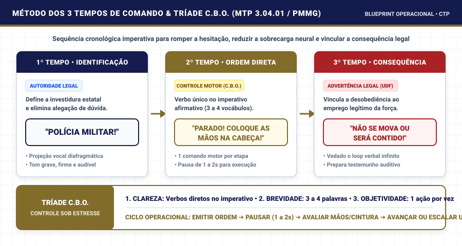
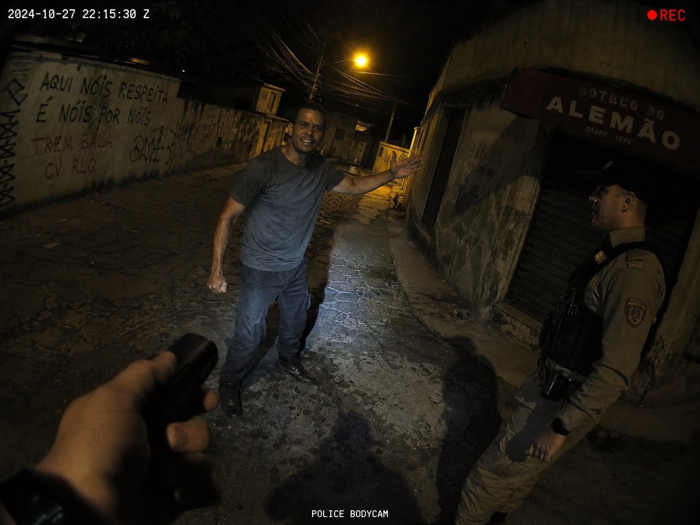
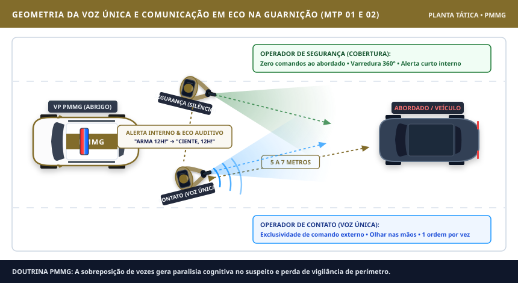
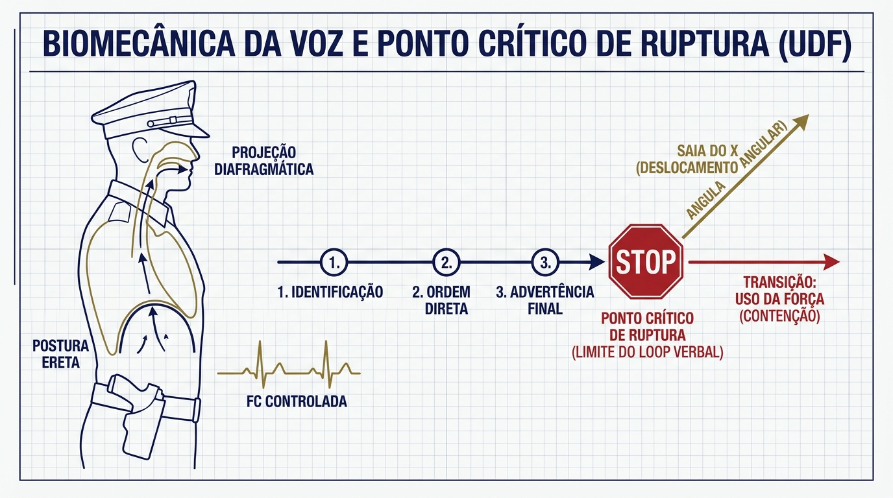

Modulação da Força, Ordem Legal Imperativa, Ponto Crítico de Ruptura e Adaptação a Públicos Específicos (MTPManual Técnico-Profissional 3.04.01 / Decreto nº 12.341/2024)
Na doutrina da Polícia Militar de Minas Gerais (MTPManual Técnico-Profissional 3.04.01/2020-CG, Seção 6, item 6.1.1), a verbalização não é mero diálogo cotidiano, mas um instrumento técnico de intervenção policial presente em todos os níveis de força. Seu objetivo é obter a submissão voluntária à ordem legal, controlar a distância de reação e prevenir a escalada para o confronto físico ou letal.
Vídeo 1 — Videoaula Instrucional em Motion Design Blueprint: Controle Verbal, Tríade C.B.O.Clareza, Brevidade e Objetividade, Voz Única e Ponto Crítico de Ruptura. (Fonte: Centro de Treinamento Policial — CTPCentro de Treinamento Profissional/PMMGPolícia Militar de Minas Gerais, 03/11/2026)
Regida pela Lei Federal nº 13.060 (22/12/2014), pelo Decreto Federal nº 12.341 (23/12/2024) e pela Portaria Interministerial nº 4.226 (31/12/2010): o emprego de força deve ser precedido de advertência verbal e oportunidade de acatamento, ressalvada a reação imediata em legítima defesa perante agressão letal iminente.
Sob estresse agudo, a capacidade de processamento auditivo do abordado sofre redução severa. Comandos curtos, imperativos e sequenciais diminuem a latência motora e eliminam ambiguidades interpretativas.
Para impor autoridade legal e controlar os movimentos do abordado (MTPManual Técnico-Profissional 3.04.01 e MTPManual Técnico-Profissional 3.04.02), o comando verbal aplica a Tríade C.B.O.Clareza, Brevidade e Objetividade (Clareza no imperativo afirmativo, Brevidade de 3 a 4 vocábulos e Objetividade com um único verbo motor por vez) estruturada em três etapas:

Figura 1 — Estrutura Sequencial dos 3 Tempos de Comando e Ciclo Operacional C.B.O.Clareza, Brevidade e Objetividade (Fonte: Diagrama vetorial técnico baseado no MTPManual Técnico-Profissional 3.04.01/2020-CG — CTPCentro de Treinamento Profissional/PMMGPolícia Militar de Minas Gerais)
"POLÍCIA MILITAR!" — Define a investidura estatal imediata e afasta qualquer alegação jurídica de desconhecimento da autoridade pública.
"PARADO! COLOQUE AS MÃOS NA CABEÇA!" — Verbo de ação no imperativo afirmativo focado prioritariamente no controle visual das mãos. Emita a ordem e conceda pausa de 1 a 2 segundos para o cérebro do abordado processar e cumprir antes do próximo comando ("Vire de costas!" ➔ "Afaste os pés!").
"NÃO SE MOVA OU SERÁ CONTIDO!" — Advertência objetiva sobre o emprego legítimo e proporcional da força caso persista a desobediência, construindo prova testemunhal auditiva.
Acima de 145 batimentos por minuto (bpm), a descarga simpática contrai a glote (tornando a voz aguda ou trêmula) e provoca taquifemia (fala acelerada). O policial deve manter ancoragem postural e respiração diafragmática para preservar a congruência comunicativa:

Figura 2 — Posicionamento em ângulo de segurança, foco luminoso nas mãos do abordado e projeção vocal controlada. (Fonte: Ilustração tática gerada por IA sob diretrizes do CTPCentro de Treinamento Profissional/PMMGPolícia Militar de Minas Gerais)
Na obra Silent Messages (1971), Mehrabian demonstrou que, diante de incongruência na expressão de atitudes e emoções, o receptor pondera 55% a linguagem corporal/facial, 38% o tom/modulação vocal e 7% as palavras. Na abordagem policial, os 7% verbais são juridicamente insubstituíveis (pois definem a ordem legal), mas se a voz soar esganiçada ou a postura hesitante, o suspeito descartará a palavra e reagirá aos 93% não verbais.
Mantenha distância mínima de reação (5 a 7 metros em fundada suspeita), base em 45° protegendo o coldre, mãos livres acima da linha da cintura ou arma em pronta resposta (guarda baixa/sul) e olhar fixo nas mãos e linha de cintura do abordado.
A emissão de ordens simultâneas por múltiplos policiais ("Cacofonia Operacional") gera bloqueio cognitivo no abordado e compromete a segurança de perímetro (MTPManual Técnico-Profissional 3.04.01 e MTPManual Técnico-Profissional 3.04.02):

Figura 3 — Divisão de setores táticos: Operador de Contato (Voz Única) e Operador de Segurança (Varredura 360° e Alerta Interno em Eco). (Fonte: Diagrama vetorial técnico CTPCentro de Treinamento Profissional/PMMGPolícia Militar de Minas Gerais)
Apenas o Policial de Contato dirige ordens ao abordado. O Policial de Segurança (Cobertura) mantém silêncio externo absoluto, dedicando 100% da atenção à varredura 360°, mãos do suspeito e retaguarda.
Se o Segurança visualizar risco oculto, emite alerta interno curto e codificado: "ARMA ÀS 12 HORAS!" ou "RETROVISOR!". Para vencer a exclusão auditiva, o Contato responde obrigatoriamente em eco: "CIENTE, 12 HORAS!". Em troca de função: "ASSUMO O CONTATO!" ➔ "ASSUMO A SEGURANÇA!".
| Parâmetro Tático | Voz Única (Policial de Contato) | Vozes Simultâneas (Falha Crítica) |
|---|---|---|
| Processamento do Abordado | Recepção unívoca da ordem, foco direcionado e execução motora previsível. | Sobrecarga cognitiva, paralisia decisória ou movimento involuntário brusco. |
| Segurança da Cobertura | Vigilância preservada sobre ângulos mortos, terceiros e linha de tiro limpa. | Estreitamento visual e perda de consciência situacional de retaguarda. |
| Auditorias e Registro (COP/REDS) | Demonstração técnica de controle, legalidade estrita e coordenação tática. | Evidência de descoordenação operacional e perda de comando da cena. |
A verbalização possui limite tático objetivo. O policial jamais deve cair no Loop Verbal (Fixação Verbal Desmedida) — repetindo comandos infinitamente enquanto o suspeito ignora as ordens, fecha a distância ou prepara agressão:

Figura 4 — Linha de progressão verbal, limite de repetição (Ponto Crítico de Ruptura) e transição com deslocamento angular ("Saia do X"). (Fonte: Ilustração em estilo Blueprint Técnico gerada por IA — CTPCentro de Treinamento Profissional/PMMGPolícia Militar de Minas Gerais)
Conforme o MTPManual Técnico-Profissional 3.04.01 (Seção 6.1.1, alínea "b"), se o abordado retardar o cumprimento sem esboçar agressão, repita literalmente a ordem de forma pausada e firme por 2 a 3 vezes, advertindo sobre o crime de desobediência e o uso da força. Persistindo a recusa, encerre o ciclo argumentativo e aplique o controle de contato/físico proporcional.
Se o indivíduo leva a mão à arma ou avança com instrumento letal rompendo a distância de segurança, cessa o diálogo prolongado. Emita a ordem única de sobrevivência ("POLÍCIA! LARGUE A ARMA!", se houver tempo hábil) simultânea ao deslocamento lateral ("Saia do X"), busca de abrigo e resposta proporcional imediata (IMPOInfração de Menor Potencial Ofensivo/AINMArma de Incapacitação Não-Letal ou força letal, conectando com o Módulo 1).
VERBALIZAÇÃO NA CONTENÇÃO E PREVENÇÃO DE ASFIXIA POSICIONAL: A verbalização não cessa durante a imobilização física — continue comandando ("Cesse a resistência! Relaxe o braço!") para gerar testemunho auditivo e garanta congruência biomecânica (nunca ordene "mãos para trás" se o braço do suspeito estiver travado sob o tórax dele). Após algemar, reduza o tom de voz, cesse imediatamente qualquer compressão dorsal/torácica, posicione o contido sentado ou em decúbito lateral e pergunte: "Você consegue respirar normalmente? Está ferido?".
O MTPManual Técnico-Profissional 3.04.01 (item 6.1.1) determina que o policial avalie se o descumprimento decorre de barreira cognitiva, sensorial, química ou linguística, aplicando os Procedimentos Operacionais Padrão específicos da PMMGPolícia Militar de Minas Gerais:
O paciente em crise psicótica ou suicida não responde à intimidação; gritos precipitam o ataque. Aplique os Quatro "Is": Isole o perímetro (6 a 7m de reação / 15m de área); Interrompa estímulos (desligue sirenes, giroflex e baixe o HT); Individualize a fala (um único policial em tom calmo e pausado: "Meu nome é..., estou aqui para garantir sua segurança"); e Informe/acione apoio (SAMUServiço de Atendimento Móvel de Urgência/CBMMG/BOPE). Valide a emoção sem alimentar nem confrontar o delírio e conduza à rede de saúde (RAPSRede de Atenção Psicossocial).
A intoxicação reduz a velocidade de processamento neural e causa desinibição. Aplique a Técnica do Tom Descendente (Voz Âncora) — falando de forma mais grave e pausada para reduzir a exaltação —, utilize Strip Phrases (Judô Verbal: "Compreendo sua posição, no entanto cumpra a ordem agora"), afaste o abordado do "efeito plateia" e conceda segundos extras para a resposta motora.
Ausência de resposta ao comando sonoro não configura desobediência imediata. Ao notar que o cidadão não ouve e não esboça agressão, não grite nem escale a força: posicione-se no campo visual frontal com o rosto iluminado (permitindo leitura labial), mantenha distância segura e utilize gestos demonstrativos lentos e claros indicando a posição das mãos. Após estabilizar, utilize escrita ou Libras.
Conforme a Lei nº 13.445/2017 e o POPProcedimento Operacional Padrão 1.03.057/2026, jamais eleve o volume da voz tentando compensar barreira de idioma. Articule pausadamente usando vocábulos simples/cognatos aliados a gestos universais demonstrativos. Considere diferenças culturais (evitar contato visual pode indicar respeito) e, após conter riscos, utilize aplicativo de tradução móvel.
Analise no registro operacional abaixo a aplicação prática do controle verbal: o militar mantém a distância de segurança, interrompe verbalmente a menção do abordado de levar a mão próxima à cintura e, após estabilizar o controle, explica tecnicamente o procedimento:
Vídeo 2 — Intervenção Operacional Real: Controle verbal de mãos, manutenção de distância de reação e explicação técnica pós-estabilização. (Fonte: Acervo Doutrinário Operacional CTPCentro de Treinamento Profissional/PMMGPolícia Militar de Minas Gerais, 03/11/2026)
Emitir "Não se mova!" simultaneamente a "Deite no chão!" ou "Desça do carro com as mãos para cima!" gera erro motor involuntário.
Discutir com o suspeito, apontar o dedo indicador na face ou usar termos pejorativos (MTPManual Técnico-Profissional 01, pág. 43–45) degrada a autoridade legal e contamina o registro em câmeras (COP).
Normatização ABNT NBR 6023 — Ordenação Alfabética Rigorosa e Datas Verificadas (DD/MM/AAAA)